Towards automating construction tasks: Large-scale object mapping
한줄 요약 — 이 연구는 넓은 건설 현장을 드론으로 먼저 지도화하고 굴착기 LiDAR로 국소 변화를 추적하는 객체 중심 파이프라인을 제안해, 0.5–1 m³ 자연석의 재탐지·자세 갱신·파지를 연결했으며 온라인 정합 약 1초와 88.6% 파지 성공률을 달성했지만 얇은 석재와 가림, 파지 중 자세 추적에는 한계가 남았다.
1.연구 배경 및 동기
대규모 건설 현장 지도와 근접 조작 지도를 하나의 객체 세계모델로 연결하기
건설 자동화에서 드론은 넓은 부지를 빠르게 관측하지만, 팔이 물체를 잡는 순간 필요한 밀도와 최신성을 계속 제공하기 어렵다. 반대로 굴착기 탑재 LiDAR는 작업점 주변을 반복 관측할 수 있어도 시야가 좁고 팔·차체가 점군을 가리며, 한 번 옮겨진 자재 때문에 초기 지도가 곧 낡는다. 논문은 두 센서 체계를 어느 하나로 대체하지 않고, 드론이 만든 전역 배경과 굴착기의 온라인 국소 지도를 객체 수준에서 연결하는 문제로 정의한다.
대상 작업은 규격품이 아닌 0.5–1 m³ 크기의 자연석을 찾아 집어 옮기는 건식 석벽 시공이다. 자연석은 CAD 모델도 반복되는 표준 형상도 없고, 지면과 맞닿은 부분은 관측되지 않으며, 평평하거나 둥근 정도가 모두 달라 단순한 바운딩박스만으로 안정 파지를 고르기 어렵다. 따라서 세계모델은 석재별 점군과 자세를 보존하고, 굴착기가 물체를 이동시킬 때마다 해당 객체만 재탐지해 위치를 갱신해야 한다.
저자들의 핵심 관점은 지도 정합과 파지를 별개 모듈로 끝내지 않는 데 있다. 사전 드론 지도의 세그먼트가 작업 중 LiDAR 세그먼트와 일치하면 객체 데이터베이스의 자세가 갱신되고, 그 자세로 원래 더 완전한 점군을 온라인 지도에 옮겨 파지 계획에 사용한다. 관측-정합-갱신-조작의 폐루프가 장시간 건설 작업에 필요한 지속적인 장면 이해를 만든다.
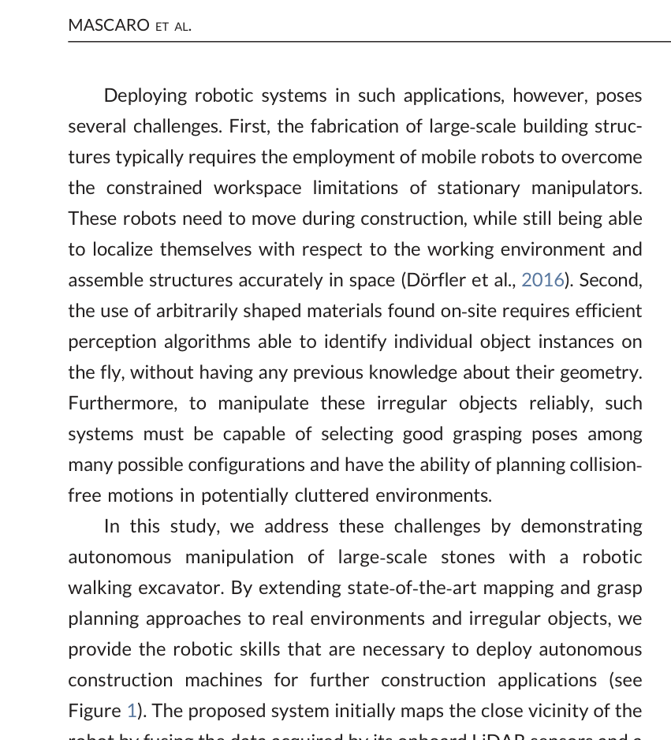
원문 Figure 1 · PDF p.2 — Figure 1). The proposed system initially maps the close vicinity of the
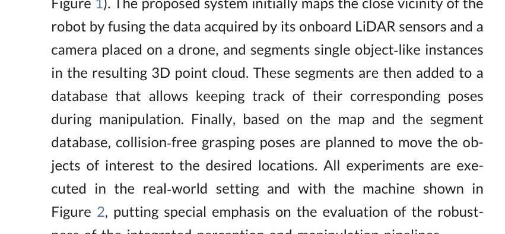
원문 Figure 2 · PDF p.2 — Figure 2, putting special emphasis on the evaluation of the robust-
선행 연구의 한계
항공 사진측량은 큰 영역을 고해상도로 재구성하지만 로봇이 물체를 이동시킨 뒤의 동적 변화를 온라인으로 반영하지 못한다.
차량 탑재 LiDAR SLAM만으로는 센서 사각과 지면 접촉면 때문에 물체 형상이 불완전하고, 넓은 초기 현장을 모두 충분한 밀도로 스캔하는 데 시간이 든다.
대부분의 학습 파지 연구는 소형 평행그리퍼와 RGB-D 점군을 가정해 톤급 불규칙 석재와 굴착기 기구학·지면 충돌 조건에 그대로 적용하기 어렵다.
건설 자재의 객체별 자세를 전역 지도와 온라인 지도 사이에서 지속적으로 갱신하며 실제 대형 조작까지 검증한 시스템이 부족했다.
이 연구의 기여
드론 시각-관성 지도와 HEAP의 LiDAR 그래프 SLAM을 객체 세그먼트의 기하 특징으로 전역 정합하는 대규모 이종센서 지도화 체계를 제안했다.
지면 제거·군집화로 탐지한 개별 석재를 데이터베이스로 관리하고, 이동 뒤 국소 ICP 재정합을 통해 객체 자세와 계획 점군을 갱신하는 방법을 구현했다.
CNN 힘폐쇄 판정 뒤 접근 정렬·그리퍼 포위·중심 근접 비용을 순차 적용하는 톤급 자연석 파지 후보 선택기를 제안했다.
7개 자연석을 두 배치에서 반복 이동하며 전역 정합 90%, 파지 88.6%, 객체 정합 약 1초의 실차 성능을 검증했다.
2.방법론 및 시스템 구성
초기 전역 지도는 AscTec Neo 헥사콥터의 시각-관성 센서가 얻은 약 200장의 영상을 VINS-Mono와 COLMAP으로 처리해 만든다. HEAP는 상하로 배치한 두 Velodyne VLP-16, GNSS·IMU 상태추정, 실시간 LaserSLAM/iSAM2로 국소 점군 지도를 만든다. 자기 몸체 필터, 수직·수평 스캔 쌍 정합, voxel 적산으로 팔의 이동과 센서 가림에 견디는 장면 지도를 유지한다.
두 지도는 지면 제거 후 얻은 객체 세그먼트를 매개로 결합된다. 각 세그먼트의 ISS keypoint와 SHOT descriptor를 계산하고 최근접 특징 대응을 기하 검증한 뒤 ICP로 전역 변환을 정제한다. 전역 좌표가 맞으면 드론 지도에서 분리한 석재별 점군과 자세가 객체 데이터베이스가 되고, 이후 LiDAR에서 다시 보인 객체의 ICP 변환으로 해당 자세만 갱신한다.
파지 계획은 갱신된 객체 점군을 이용한다. 표면에서 표본점을 뽑아 국소 고유벡터 좌표계를 만들고 다수의 6자유도 그리퍼 자세를 생성한다. 환경 충돌을 제거한 뒤 기존 4층 CNN으로 힘폐쇄 가능성을 판정하고, 지면 법선과의 접근 정렬, 포위 파지 정도, TCP와 석재 중심 거리의 세 기준을 계층적으로 줄여 최종 자세를 고른다.
처리 파이프라인
1
드론 전역 지도 생성
헥사콥터가 작업장 상공에서 약 200장의 시각-관성 영상을 수집한다. VINS-Mono의 자세 초기값과 COLMAP의 다중시점 기하를 결합해 석재와 주변 지형을 포함한 고밀도 기준 점군을 재구성한다.
2
굴착기 온라인 LiDAR SLAM
두 VLP-16 스캔에서 기구학 모델에 속하는 팔·다리 점을 제거하고 수직·수평 스캔을 한 쌍으로 조립한다. GNSS-IMU 오도메트리와 scan matching 제약을 pose graph에 넣어 iSAM2로 궤적과 국소 지도를 증분 최적화한다.
3
객체 분할
RANSAC 평면으로 굴곡 여유를 둔 지면을 제거하고 Euclidean clustering으로 돌 후보를 분리한다. 거의 평면인 군집과 크기 조건 밖 군집을 버려 독립 석재 세그먼트만 남긴다.
4
이종 지도 전역 정합
드론·LiDAR 세그먼트에서 ISS keypoint와 SHOT 특징을 계산하고 kd-tree 최근접 대응을 만든다. 세 점 대응의 길이 일관성을 검사해 변환 후보를 생성하고, 최대 지지 변환을 ICP로 정밀화해 두 지도의 좌표계를 맞춘다.
5
객체 자세 재등록
전역 정합 뒤 드론 세그먼트를 객체 데이터베이스에 저장한다. 돌이 이동하면 온라인 LiDAR 군집과 데이터베이스 점군의 여러 초기 자세를 ICP로 비교하고 임계값 아래인 변환으로 세계좌표 객체 자세를 갱신한다.
6
계층형 파지 후보 선택
증강한 계획 점군에 대형 그리퍼 후보를 생성하고 충돌 및 CNN 힘폐쇄 조건을 통과시킨다. 접근 방향 상위 40개, 포위 비용 상위 20개를 남긴 뒤 TCP가 중심에 가장 가까운 후보를 실행한다.
오도메트리와 scan matching이 제공한 상대자세 측정의 정보가중 오차를 최소화해 굴착기 궤적과 LiDAR 지도를 동시에 정합한다.
접근 방향 정렬 비용
c_{align}=\arccos(-n_{ground}^{T}n_{approach})
그리퍼 접근 방향이 위쪽 지면 법선의 반대 방향과 정렬될수록 비용을 낮춰 팔의 자연스러운 상부 접근과 주변 충돌 여유를 우선한다.
포위 파지 비용
c_{enc}=r_{CoM}^{T}n_{approach}
손바닥에서 객체 중심으로 향하는 벡터를 접근축에 투영해, 손가락 끝의 집기보다 석재를 깊게 감싸는 power grasp를 선호한다.
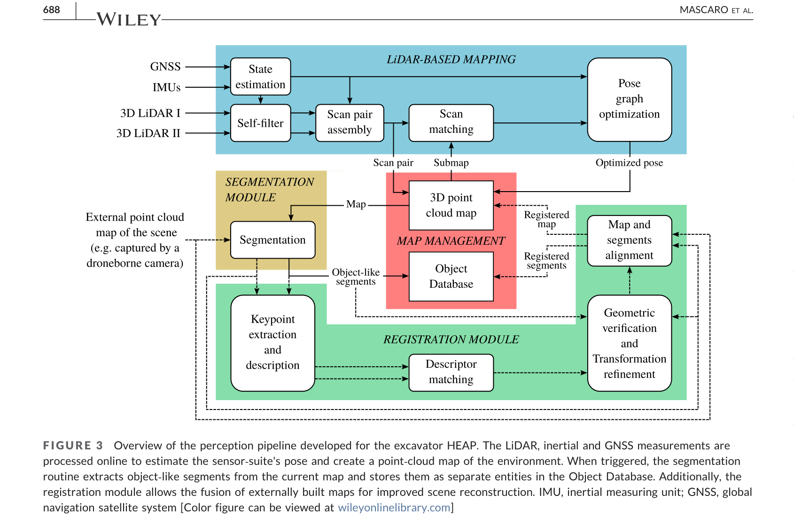
원문 Figure 3 · PDF p.5 — FIGURE 3 Overview of the perception pipeline developed for the excavator HEAP. The LiDAR, inertial and GNSS measurements are processed online to estimate the sensor‐suite's pose and create a point‐cloud map of the environment. When triggered, the segmentation routine extracts object‐like segments from the current map and stores them as separate entities in the Object Database. Additionally, the registration module allows the fusion of externally built maps for improved scene reconstruction. IMU, inertial measuring unit; GNSS, global navigation satellite system [Color figure can be viewed at wileyonlinelibrary.com]
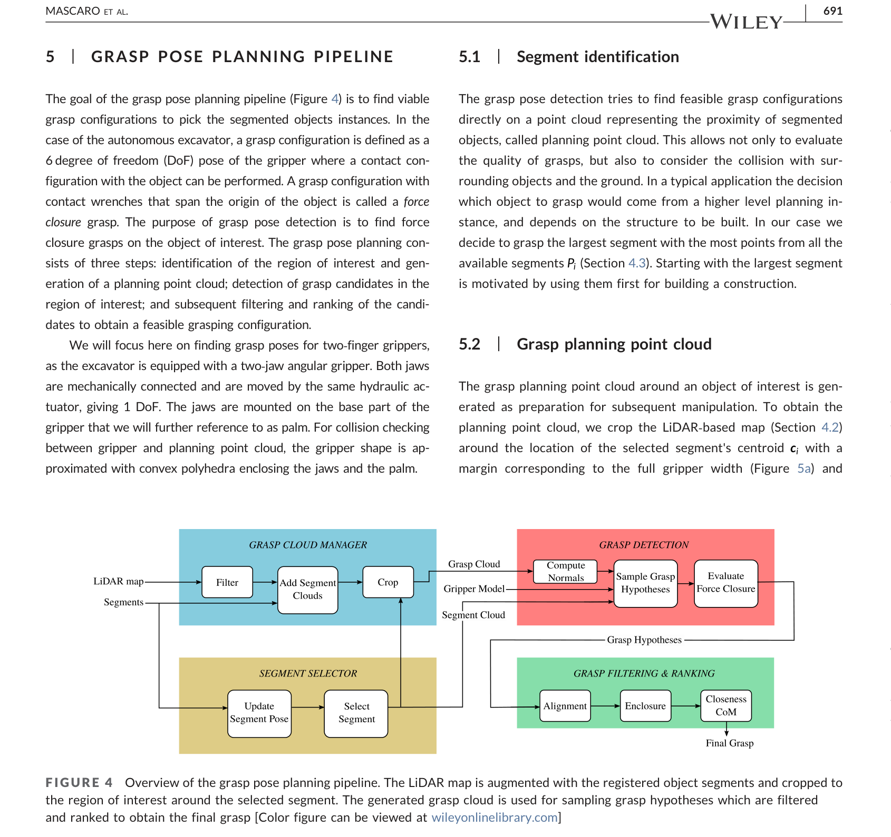
원문 Figure 4 · PDF p.8 — FIGURE 4 Overview of the grasp pose planning pipeline. The LiDAR map is augmented with the registered object segments and cropped to the region of interest around the selected segment. The generated grasp cloud is used for sampling grasp hypotheses which are filtered and ranked to obtain the final grasp [Color figure can be viewed at wileyonlinelibrary.com]
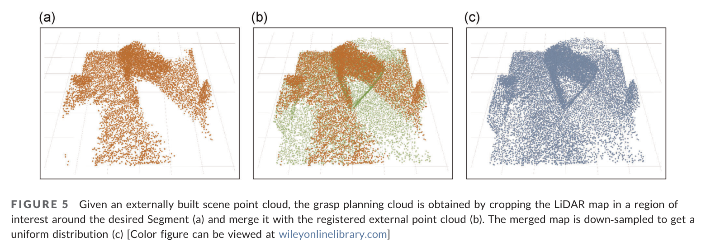
원문 Figure 5 · PDF p.8 — FIGURE 5 Given an externally built scene point cloud, the grasp planning cloud is obtained by cropping the LiDAR map in a region of interest around the desired Segment (a) and merge it with the registered external point cloud (b). The merged map is down‐sampled to get a uniform distribution (c) [Color figure can be viewed at wileyonlinelibrary.com]
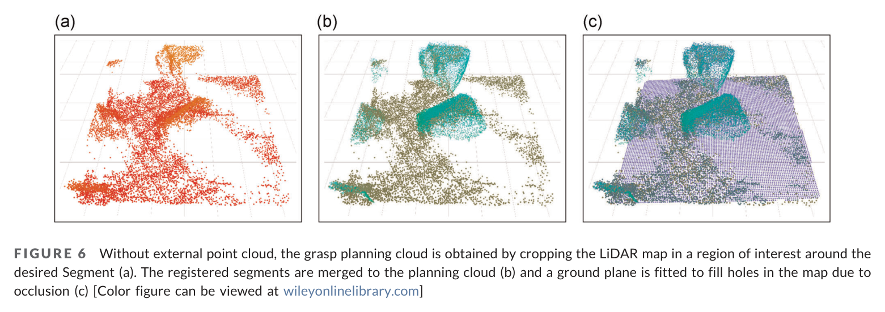
원문 Figure 6 · PDF p.9 — FIGURE 6 Without external point cloud, the grasp planning cloud is obtained by cropping the LiDAR map in a region of interest around the desired Segment (a). The registered segments are merged to the planning cloud (b) and a ground plane is fitted to fill holes in the map due to occlusion (c) [Color figure can be viewed at wileyonlinelibrary.com]
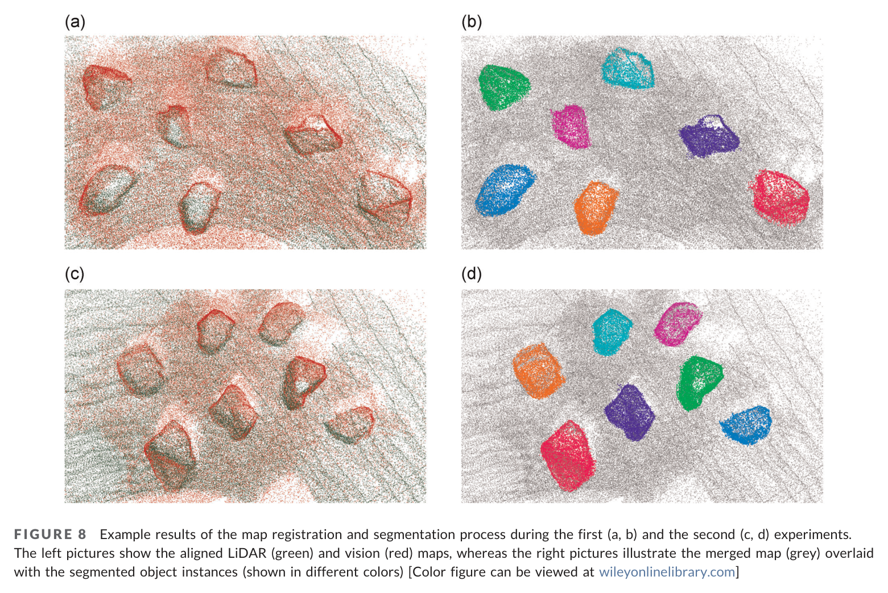
원문 Figure 8 · PDF p.11 — FIGURE 8 Example results of the map registration and segmentation process during the first (a, b) and the second (c, d) experiments. The left pictures show the aligned LiDAR (green) and vision (red) maps, whereas the right pictures illustrate the merged map (grey) overlaid with the segmented object instances (shown in different colors) [Color figure can be viewed at wileyonlinelibrary.com]
3.핵심 기술
드론-굴착기 다중 해상도 지도 결합
드론 지도를 단순 배경 그림으로 쓰지 않고 각 석재의 형상 저장소로 사용한다. 굴착기 LiDAR가 제공하는 최신 위치와 드론 점군의 넓은 시야를 전역 변환으로 묶으면, 한 센서가 보지 못한 면을 다른 센서가 보완하면서도 작업 중 이동은 국소적으로 갱신할 수 있다.
이 구조는 전체 점군의 매 프레임 정합 대신 개별 객체의 자세만 수정하므로, 건설 현장의 큰 정적 배경과 소수 동적 자재를 계산적으로 분리한다.
드론 시각 지도와 두 VLP-16의 온라인 LiDAR 지도 사용
ISS-SHOT 특징의 전역 후보 뒤 ICP 정밀화
배경은 유지하고 이동한 객체의 자세만 데이터베이스에서 갱신
세그먼트 기반 객체 지속성
RANSAC 지면 제거와 Euclidean clustering은 자연석을 독립 세그먼트로 만든다. 이동 전 점군을 객체 모델로 보존하므로, 물체가 다른 방향으로 놓여도 온라인 관측과 여러 초기자세 ICP를 비교해 동일 객체를 다시 찾을 수 있다. 정합 적합도가 임계값 아래일 때만 갱신해 잘못된 대응을 억제한다.
객체 ID·점군·세계 자세를 하나의 데이터베이스 레코드로 관리
이동 후 재스캔이 객체 좌표 변환을 직접 갱신
대형 정적 장면 전체보다 작은 세그먼트 정합으로 온라인 실행
대형 불규칙 석재용 파지 생성
드론과 LiDAR 모두 지면 접촉면을 볼 수 없으므로 관측 점군을 보완한 뒤 표면 법선과 국소 주성분으로 후보를 만든다. 소형 그리퍼 데이터로 학습된 CNN은 직접 최적 자세를 내지 않고 힘폐쇄가 아닌 후보를 대량 제거하는 필터로 제한해 사용한다.
남은 후보는 굴착기 팔의 상부 접근, 그리퍼 안쪽으로 물체를 깊게 넣는 정도, TCP와 무게중심 대용치의 근접성을 순차 적용한다. 이 계층화는 서로 다른 비용을 임의 가중합으로 섞지 않고 안전·안정성의 우선순위를 명시한다.
힘폐쇄 CNN으로 실행 불가능 후보 제거
정렬 비용 기준 상위 40개, 포위 비용 기준 상위 20개 유지
마지막에 석재 중심과 TCP 거리 최소 후보 선택
실차 온라인성을 위한 계산 축소
초기 지도 정합은 넓은 장면의 공통 좌표계를 한 번 만들기 때문에 수십 초를 허용하지만, 반복 조작 중에는 이미 분할된 객체만 정합한다. Intel Xeon E-2176M 단일 스레드에서 세그먼트 재등록이 약 1초였다는 결과는 물체를 놓고 다음 계획으로 넘어가는 굴착기 작업 주기 안에 들어온다.
최초 약 50 m² 장면 정합은 약 15초
후속 세그먼트 정합은 약 1초
점군 크기와 ICP 임계값을 실차 처리에 맞춰 제한
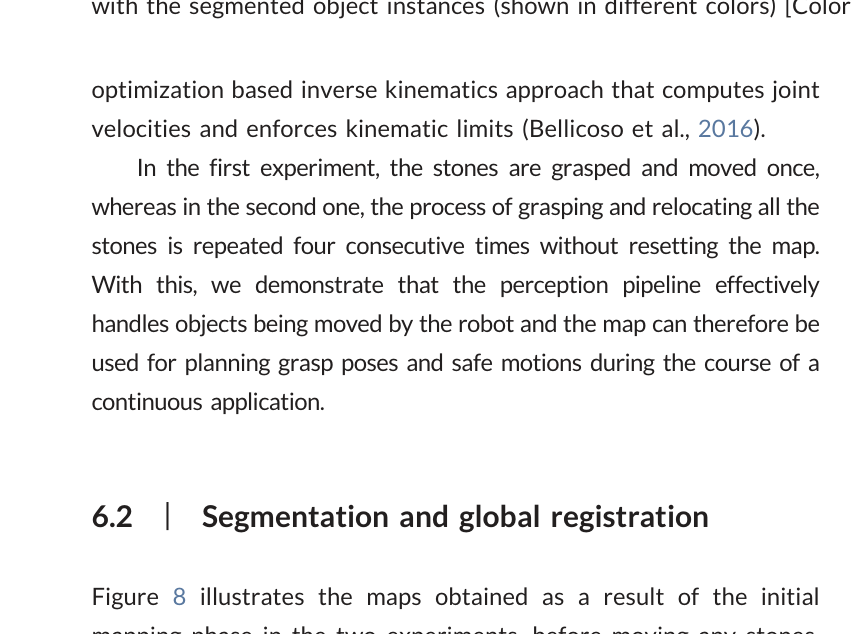
원문 Figure 8 · PDF p.11 — Figure 8 illustrates the maps obtained as a result of the initial
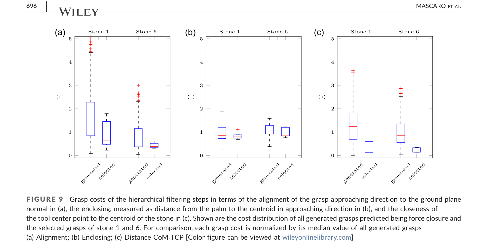
원문 Figure 9 · PDF p.13 — FIGURE 9 Grasp costs of the hierarchical filtering steps in terms of the alignment of the grasp approaching direction to the ground plane normal in (a), the enclosing, measured as distance from the palm to the centroid in approaching direction in (b), and the closeness of the tool center point to the centroid of the stone in (c). Shown are the cost distribution of all generated grasps predicted being force closure and the selected grasps of stone 1 and 6. For comparison, each grasp cost is normalized by its median value of all generated grasps (a) Alignment; (b) Enclosing; (c) Distance CoM‐TCP [Color figure can be viewed at wileyonlinelibrary.com]
4.실험 결과
실험 환경·장비·데이터
31자유도 12톤 보행 굴착기 HEAP, 석재 파지용 대형 유압 그리퍼
굴착기 Velodyne VLP-16 두 대, GNSS·IMU·관절 상태추정, LaserSLAM/iSAM2
AscTec Neo 헥사콥터와 시각-관성 센서, VINS-Mono·COLMAP 기반 사전 지도
0.5–1 m³ 범위의 서로 다른 형상 gneiss 자연석 7개, 실외 작업장 두 배치
세그먼트 등록은 Intel Xeon E-2176M CPU 단일 스레드에서 실행
실험 프로토콜
각 실험 시작 전 굴착기 캐빈을 약 20초 회전해 LiDAR 밀도를 확보하고, 드론 재구성 지도와 최초 전역 정합을 실행했다.
첫 실험에서는 7개 석재를 각각 한 번 이동했고, 두 번째 실험에서는 지도나 데이터베이스를 초기화하지 않은 채 각 석재를 네 번 더 옮겼다.
이동 뒤 LiDAR 세그먼트를 객체 모델과 정합해 자세를 갱신하고, 자동 선택된 최상위 파지를 실행했다.
파지는 충돌이 없고 힘폐쇄이며 들어 올려 이동하는 동안 돌을 떨어뜨리지 않을 때 성공으로 판정했다.
비교 기준
전역 지도화: 드론 시각 재구성 대 굴착기 LiDAR 온라인 지도는 경쟁 점수가 아니라 상호보완 입력으로 비교
파지 절제: 모든 생성 후보, CNN 힘폐쇄 통과 후보, 정렬·포위·중심 비용을 순차 통과한 최종 후보의 비용 분포 비교
자연석 자세의 정답 계측기가 없어 절대 pose 오차 baseline은 제공하지 않고, 후속 정합률과 실제 파지 성공으로 간접 평가
평가 지표
전역·후속 객체 정합 성공률과 실행시간
LiDAR·시각 지도 점수와 세그먼트 규모
35회 실제 파지의 성공률 및 수동 자세 보정 횟수
정렬·포위·중심 근접 비용의 계층별 변화
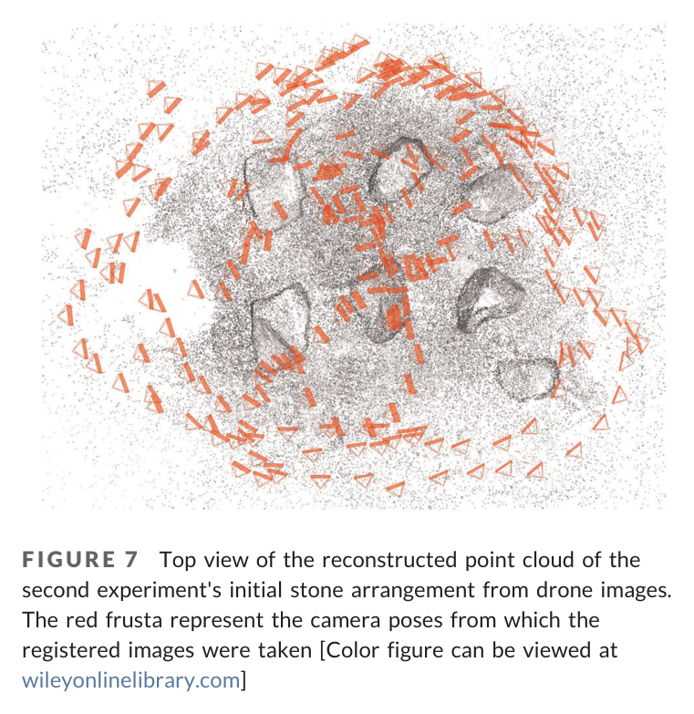
원문 Figure 7 · PDF p.10 — FIGURE 7 Top view of the reconstructed point cloud of the second experiment's initial stone arrangement from drone images. The red frusta represent the camera poses from which the registered images were taken [Color figure can be viewed at wileyonlinelibrary.com]
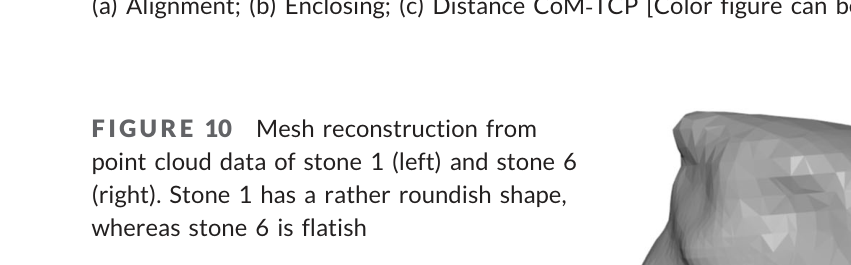
원문 Figure 10 · PDF p.13 — FIGURE 10 Mesh reconstruction from point cloud data of stone 1 (left) and stone 6 (right). Stone 1 has a rather roundish shape, whereas stone 6 is flatish
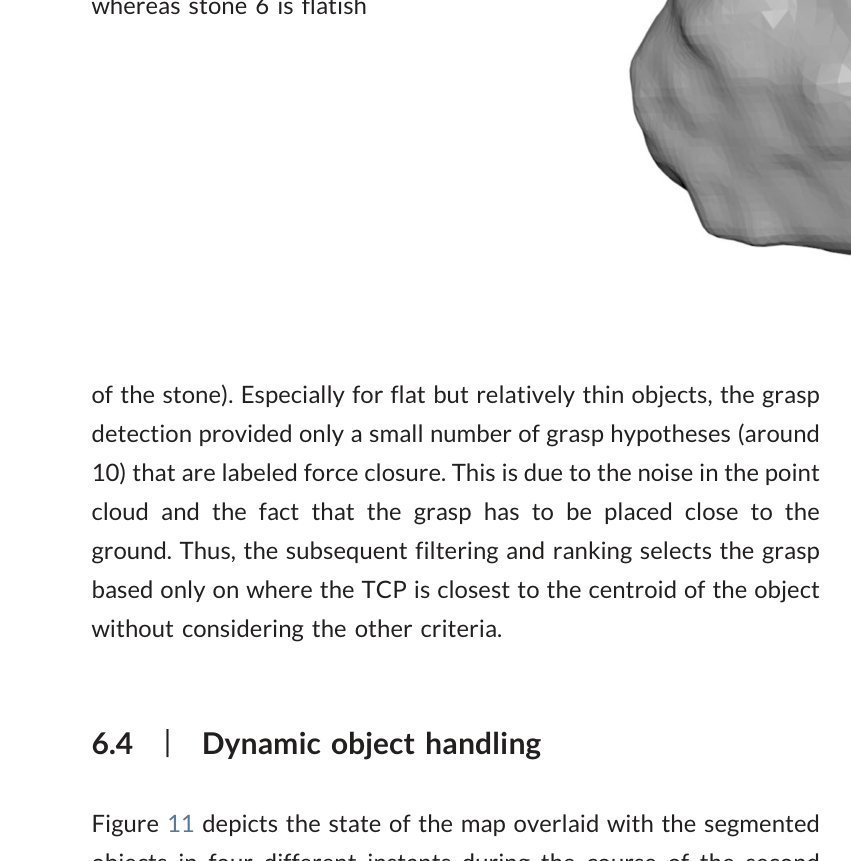
원문 Figure 11 · PDF p.13 — Figure 11 depicts the state of the map overlaid with the segmented
핵심 결과 해석
두 실험의 초기 전역 정합은 약 50 m² 장면에서 대략 15초가 걸렸다. 이후 수행한 20회의 세그먼트 기반 등록은 90%가 성공했고, 완전한 객체 등록 루틴은 두 실험 모두 Intel Xeon E-2176M 단일 스레드에서 약 1초였다. 이는 사전 드론 지도와 계속 자라는 LiDAR 지도가 센서 종류와 점 밀도가 달라도, 개별 자연석의 기하가 좌표계 연결점으로 기능할 수 있음을 보여준다.
7개 돌을 각각 5회씩 옮긴 총 35회 파지에서 자동 후보의 실행 성공률은 88.6%였다. 네 번은 선택 자세를 사람이 수정해야 했다. 둥근 석재는 포위 파지가 잘 형성된 반면 얇고 평평한 6번 석재는 지면 가까이에서 집어야 해 CNN이 힘폐쇄로 분류한 후보가 약 10개뿐이었다. 논문의 계층 필터는 전반적으로 세 비용을 개선했지만, 형상과 관측 잡음이 후보 집합 자체를 빈약하게 만들면 마지막 순위화만으로 복구할 수 없었다.
정답 자세 계측이 없어 지도 갱신의 절대 위치·회전 오차는 제시하지 않았다. 대신 이동한 석재가 데이터베이스의 점군과 다시 일치하고 그 자세로 생성한 파지가 실제 운반에 성공했다는 연쇄 결과로 충분한 인지 정확도를 간접 검증했다. 이는 작업 성공 지표에는 강하지만, 다른 센서·현장과 정밀도를 비교할 수 있는 계량적 pose benchmark는 남긴다.
정량 결과
평가 항목
정량 결과
조건·맥락
원문 근거
초기 전역 정합 시간
약 15 s
약 50 m² 작업장 드론 점군과 굴착기 LiDAR 지도
PDF p.11
후속 객체 정합 성공률
90% (20회)
석재 이동 뒤 세그먼트 재등록
PDF p.11
세그먼트 등록 실행시간
약 1 s
Intel Xeon E-2176M 단일 스레드, 두 실험
PDF p.12
실제 파지 성공률
88.6% (35회)
7개 석재를 각 5회 이동
PDF p.12
수동 보정
4/35회
자동 최상위 파지 자세를 사람이 조정
PDF p.12
얇은 석재 힘폐쇄 후보
약 10개
석재 6, 잡음과 지면 근접 조건으로 후보 감소
PDF p.13
파지 후보 단계
정렬 40개→포위 20개→중심 최종 1개
CNN 힘폐쇄 통과 뒤 계층 선택
PDF p.10
실패 사례와 경계조건
20회의 후속 등록 중 2회는 세그먼트 대응 또는 ICP 적합도가 기준을 충족하지 못했다.
얇고 평평한 돌은 보이지 않는 바닥면과 지면 충돌 때문에 힘폐쇄 후보가 약 10개로 줄어 선택 여지가 작았다.
35회 중 네 파지는 최상위 자동 자세를 그대로 실행하지 못하고 수동으로 수정했다.
파지 후 돌이 그리퍼 안에서 미끄러지거나 회전하면 데이터베이스의 예상 자세가 실제 자세와 달라질 수 있으나 이를 직접 추적하는 센서가 없다.
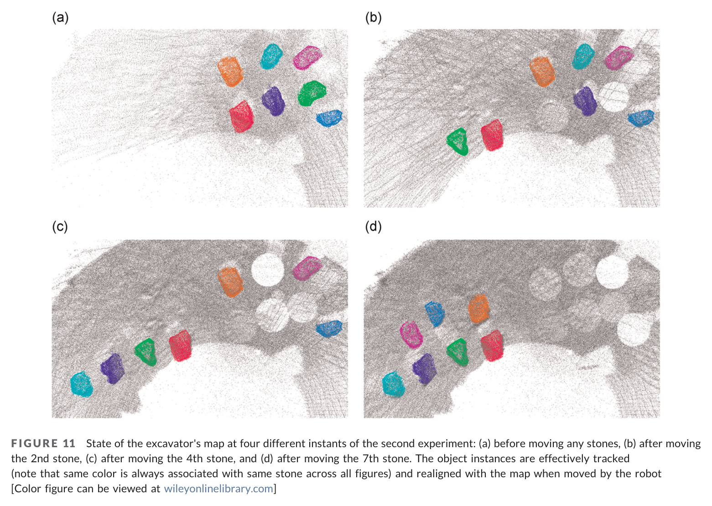
원문 Figure 11 · PDF p.14 — FIGURE 11 State of the excavator's map at four different instants of the second experiment: (a) before moving any stones, (b) after moving the 2nd stone, (c) after moving the 4th stone, and (d) after moving the 7th stone. The object instances are effectively tracked (note that same color is always associated with same stone across all figures) and realigned with the map when moved by the robot [Color figure can be viewed at wileyonlinelibrary.com]
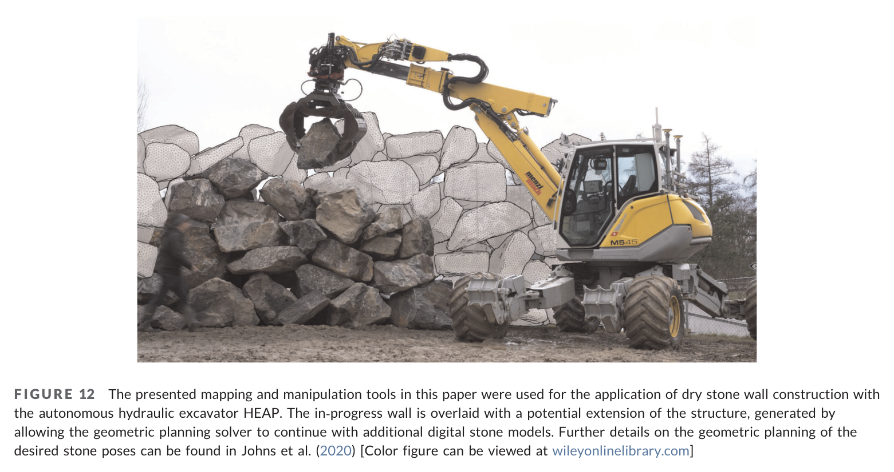
원문 Figure 12 · PDF p.14 — FIGURE 12 The presented mapping and manipulation tools in this paper were used for the application of dry stone wall construction with the autonomous hydraulic excavator HEAP. The in‐progress wall is overlaid with a potential extension of the structure, generated by allowing the geometric planning solver to continue with additional digital stone models. Further details on the geometric planning of the desired stone poses can be found in Johns et al. (2020) [Color figure can be viewed at wileyonlinelibrary.com]
5.한계 및 향후 연구
현재 한계
객체 자세의 외부 ground truth가 없어 지도 정합의 절대 병진·회전 오차를 보고하지 못했다.
초기 배치에서 석재가 서로 떨어져 있어 지면 제거와 Euclidean clustering이 쉬웠으며 실제 더미의 접촉·가림은 검증하지 않았다.
드론과 지붕 LiDAR가 보지 못한 지면 접촉면을 기하적으로 보완하므로 얇은 돌의 파지 후보 품질이 관측 잡음에 민감하다.
그리퍼 내부에서 물체가 움직이는지 직접 관측하지 않아 파지 뒤 객체 자세가 데이터베이스 갱신값과 달라질 수 있다.
향후 연구
굴착기 팔이나 그리퍼에 근접 카메라를 달아 파지 직전 가려진 표면과 접촉 위치를 재관측한다.
서로 맞닿고 쌓인 석재 더미에서 개별 객체를 분리하는 학습 또는 모델 기반 segmentation으로 확장한다.
그리퍼 안의 객체 자세를 온라인 추적하고 필요하면 자율 재파지를 수행해 세계모델과 실제 물체의 불일치를 줄인다.
정밀 외부 추적을 사용한 객체 pose benchmark를 구축해 지도 정합 오차와 조작 성공의 관계를 계량화한다.
6.한마디로 정리
핵심 방법은?
드론 사전 점군, 굴착기 LiDAR 그래프 SLAM, 세그먼트 특징 정합, 객체 데이터베이스, 계층형 파지 필터를 하나의 지속 지도화-조작 루프로 연결했다.
핵심 결과는?
자연석 7개를 반복 이동하며 전역/객체 지도 정합 90%, 온라인 등록 약 1초, 실제 파지 88.6%를 달성했다.
한계는?
분리된 초기 석재와 간접 정확도 평가에 머물렀고, 얇은 석재·더미 가림·그리퍼 내부 자세 변화에는 여전히 사람 보정이 필요했다.
#환경인식#측위·매핑#작업·궤적계획#다중 LiDAR 점군지도#드론 지도 정합#객체 DB#force-closure 파지
나의 의견 / 우리 연구와의 연관성
자율굴착·건설 로봇에서 이 논문의 직접적 가치는 전역 설계 지도와 작업 도중 바뀌는 국소 자재 상태를 객체로 이어준다는 데 있다. 굴착 토적, 파이프, 프리캐스트 부재도 전체 현장 점군을 매번 다시 만드는 대신 작업 대상만 분할·재등록하면 계획기의 좌표 일관성을 오래 유지할 수 있다.
다만 성공률을 높이려면 객체 지도 갱신을 파지 전 관측으로 끝내지 말고 힘·그리퍼 변위·근접 시각까지 융합해야 한다. 토사처럼 형상이 계속 변하는 대상에는 고정 객체 ID보다 부피 패치나 표면 변화 단위를 쓰는 변형이 필요하지만, 항공 전역지도와 장비 근접지도를 계층화하는 원리는 그대로 적용된다.
드론은 작업 순서와 접근 경로를, 굴착기 LiDAR는 버킷·그리퍼 근처의 최신 장애물과 대상 자세를 제공한다.
객체별 갱신은 굴착 후 토적 위치, 운반물 투하 위치, 부재 설치 상태를 장기 임무 세계모델에 반영하는 방식으로 확장할 수 있다.
힘폐쇄 CNN을 후보 제거기로만 쓰고 기계 기구학 비용을 뒤에 적용한 구조는 학습 모델과 안전 제약을 결합하는 실용적 예다.
88.6% 성공과 4회 수동 보정은 자율 시공 생산성 평가에서 인지 성공뿐 아니라 회복·재파지 시간을 반드시 포함해야 함을 보여준다.
7.전체 그림·표
본문 핵심 위치에 배치하지 않은 원문 Figure와 Table을 원문 페이지 순서로 수록한다.
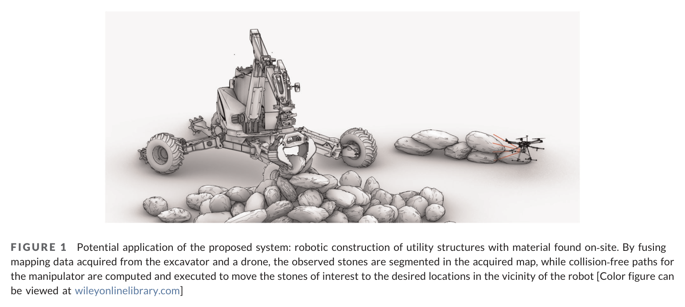
원문 Figure 1 · PDF p.2 — FIGURE 1 Potential application of the proposed system: robotic construction of utility structures with material found on‐site. By fusing mapping data acquired from the excavator and a drone, the observed stones are segmented in the acquired map, while collision‐free paths for the manipulator are computed and executed to move the stones of interest to the desired locations in the vicinity of the robot [Color figure can be viewed at wileyonlinelibrary.com]
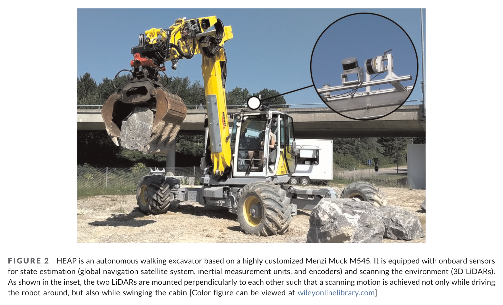
원문 Figure 2 · PDF p.3 — FIGURE 2 HEAP is an autonomous walking excavator based on a highly customized Menzi Muck M545. It is equipped with onboard sensors for state estimation (global navigation satellite system, inertial measurement units, and encoders) and scanning the environment (3D LiDARs). As shown in the inset, the two LiDARs are mounted perpendicularly to each other such that a scanning motion is achieved not only while driving the robot around, but also while swinging the cabin [Color figure can be viewed at wileyonlinelibrary.com]
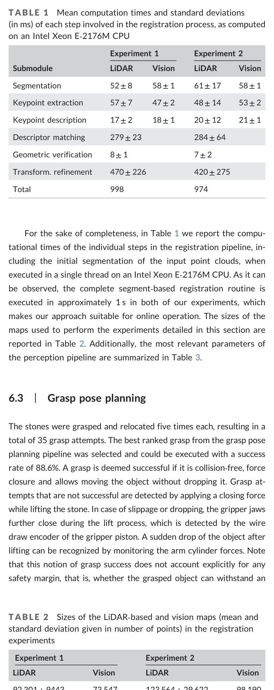
원문 Table 1 · PDF p.12 — TABLE 1 Mean computation times and standard deviations (in ms) of each step involved in the registration process, as computed on an Intel Xeon E‐2176M CPU
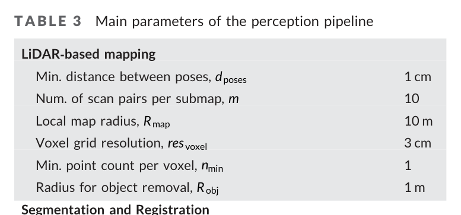
원문 Table 3 · PDF p.12 — TABLE 3 Main parameters of the perception pipeline
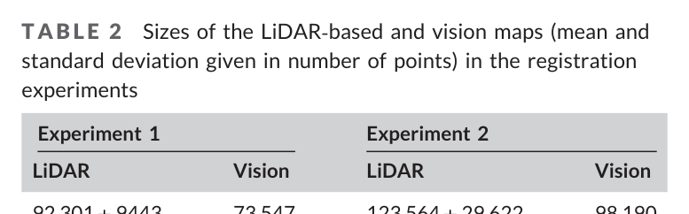
원문 Table 2 · PDF p.12 — TABLE 2 Sizes of the LiDAR‐based and vision maps (mean and standard deviation given in number of points) in the registration experiments
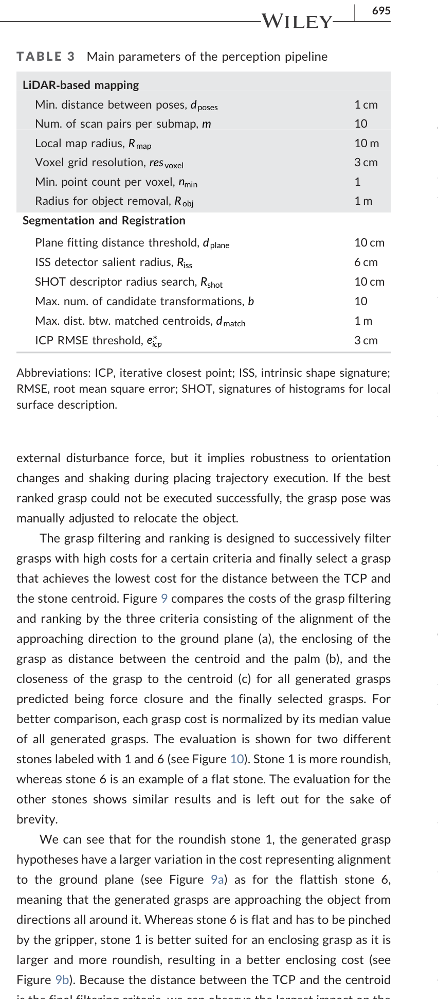
원문 Figure 9b · PDF p.12 — Figure 9b). Because the distance between the TCP and the centroid